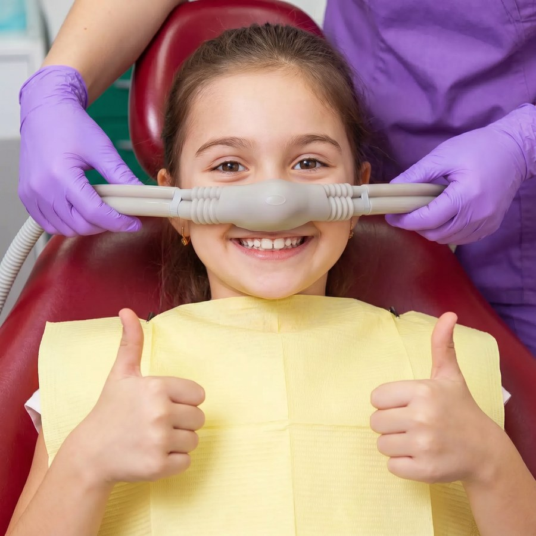

Tratamento · Conforto e tranquilidade
A sedação consciente permite realizar o seu tratamento odontológico relaxado e tranquilo, mantendo a respiração espontânea e a capacidade de responder a comandos — ideal para quem tem medo de dentista, ânsia de vômito ou precisa de procedimentos mais longos.

Por que escolher
Se o medo do dentista já te fez adiar um tratamento, veja os pontos que fazem da sedação consciente uma das técnicas mais procuradas por pacientes ansiosos na NEOdonto.
Sobre o tratamento
A sedação consciente utiliza medicação leve, administrada por via oral ou inalatória, para reduzir a ansiedade e promover relaxamento profundo durante o tratamento dentário. O paciente permanece acordado, respirando por conta própria e capaz de responder a comandos, mas com a percepção de medo, tensão e desconforto bastante reduzida. Na NEOdonto, indicamos a técnica especialmente para pacientes com medo de dentista, reflexo de náusea acentuado ou que precisam de procedimentos mais longos, sempre após avaliação individual do histórico de saúde.
Perguntas frequentes
Agende sua avaliação
Fale agora com a nossa equipe pelo WhatsApp e agende sua avaliação de sedação consciente na NEOdonto, em Goiânia.
Agendar pelo WhatsAppVeja também